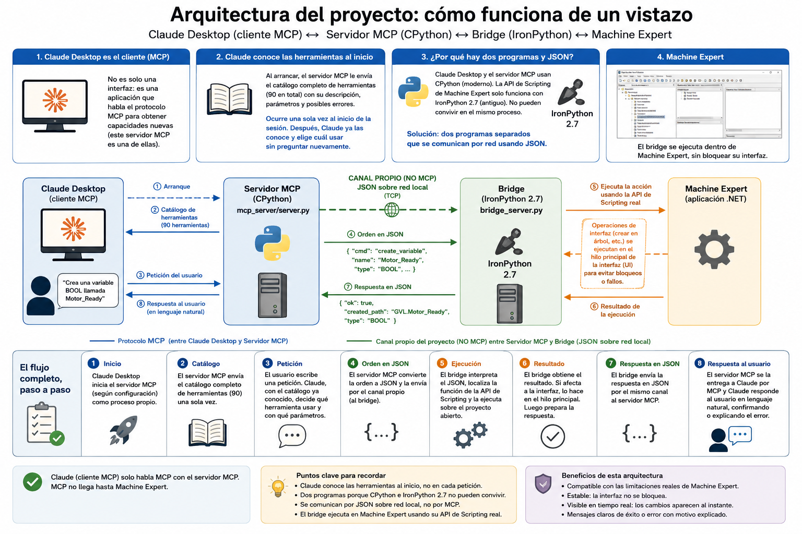

PROYECTO DE EXPERIMENTACIÓN & APLICACIÓN TÉCNICA
De una pregunta a un experimento real con MCP y PacDrive3
En la ingeniería de automatización industrial, el desarrollo sobre plataformas complejas como PacDrive3 exige un profundo conocimiento de estructuras, plantillas y APIs de scripting. Tras conocer el estándar abierto MCP (Model Context Protocol) en un webinar interno y corroborar la creciente inquietud de diversos clientes en ferias del sector como Advanced Factories, surgió una pregunta directa: ¿Es posible ir más allá de los asistentes de chat conversacionales y permitir que una IA opere directamente el entorno de ingeniería industrial?
Así que, durante las vacaciones de verano, decidí desarrollar mi propio servidor MCP como experimento práctico con un objetivo claro: evaluar el potencial real de conectar un Modelo de Lenguaje (LLM) —en este caso Claude Desktop— directamente con EcoStruxure Machine Expert para ejecutar tareas complejas, repetitivas y propensas a errores dentro del software real de trabajo, sin intermediarios ni simulaciones opacas.
Para que el experimento tuviera sentido, necesitaba algo más que una demostración sencilla. Elegí PacDrive3, uno de los controladores de motion control de más alta gama del catálogo, y una de las plataformas más complejas de programar.
Su Template Full Programming Framework no es un punto de partida vacío: es una estructura completa, preparada para adaptarse a máquinas con combinaciones muy distintas de módulos, ejes y opciones de configuración. Precisamente esa complejidad lo convertía en el campo de pruebas ideal: si la IA podía aportar valor aquí, tendría sentido explorar su uso en tareas reales de ingeniería.
El primer obstáculo no fue MCP, fue la propia integración con la plataforma de ingeniería. Claude podía actuar como cliente MCP desde su aplicación de escritorio, pero la API de Scripting de Machine Expert funciona sobre IronPython 2.7, mientras que el servidor MCP necesitaba ejecutarse sobre una versión moderna de Python (CPython 3.x). Los dos entornos no podían resolverse dentro de un mismo proceso.
La solución fue separar la arquitectura en dos partes y construir un puente específico entre ellas:
MCP conecta a Claude únicamente con el servidor MCP. El tramo entre el servidor y Machine Expert es un canal aparte, construido específicamente para este proyecto — no forma parte del protocolo estándar MCP. La arquitectura completa de comunicación queda resumida en el siguiente esquema:

Una vez resuelto el puente, apareció el siguiente reto: decidir qué debía poder hacer la IA. La respuesta fue convertir operaciones concretas de ingeniería en herramientas independientes, con funciones y parámetros bien definidos. El resultado actual es un catálogo de 90 herramientas estructuradas en 12 dominios principales (86 de ingeniería operativa y 4 de diagnóstico interno):
| Dominio de Aplicación | Herramientas | Funcionalidades Principales |
|---|---|---|
| Proyectos y aplicaciones | 17 | Abrir, cerrar y guardar proyectos; listar las aplicaciones de un controlador; compilar y consultar los mensajes de compilación por categoría; elegir a qué controlador van dirigidas las siguientes órdenes en un proyecto con varios. |
| Programas y bloques (POUs) | 9 | Crear y editar programas, funciones y bloques de función, junto con sus acciones, métodos, propiedades y transiciones; leer y modificar tanto el área de declaración de variables como el código fuente de cada uno. |
| Carpetas | 3 | Organizar el árbol del proyecto en carpetas, y localizarlas por su ruta de nombres. |
| Árbol del proyecto | 5 | Renombrar, mover, reordenar y eliminar cualquier elemento del proyecto; inventariar todo lo que cuelga de un bus SERCOS sin importar de qué familia de dispositivo se trate. |
| Tareas | 8 | Crear tareas de ejecución, configurarlas, y asignar, ordenar o modificar las llamadas a programas dentro de ellas. |
| Encoders lógicos | 5 | Crear encoders lógicos y leer o modificar sus parámetros de configuración. |
| Tipos de datos (DUTs) | 5 | Definir tipos de datos propios — estructuras, enumeraciones, uniones y alias. |
| Variables globales (GVLs) | 8 | Crear y editar listas de variables globales y variables persistentes. |
| SERCOS — Lexium | 6 | Crear servodrives y módulos de eje sobre el bus SERCOS; cambiar el tipo de un servodrive ya creado sin perder su configuración; leer y modificar sus parámetros. |
| SERCOS — TM5 | 10 | Crear cabeceras y módulos de E/S remota TM5, elegirlos a partir del catálogo instalado, y mapear sus entradas/salidas a variables del proyecto. |
| SERCOS — EdgeIO | 10 | Lo mismo que TM5, sobre la familia de E/S remota Modicon Edge I/O. |
| Diagnósticos | 4 | Comprobar el estado de la conexión con Machine Expert, y verificar internamente que ciertas garantías de la propia plataforma se mantienen ciertas (uso interno de validación, no herramientas de ingeniería diaria). |
Un catálogo de herramientas solo cobra sentido si resuelve problemas concretos en el flujo de trabajo real. El impacto directo se distribuye según el perfil y la responsabilidad dentro de la organización:
A medida que crecía el catálogo apareció una cuestión crítica: ¿cómo garantizar que las herramientas ejecutan exactamente lo que prometen sin comprometer la integridad del proyecto? Se plantearon dos niveles complementarios de validación:
El experimento comenzó buscando automatizar operaciones cotidianas. Durante el desarrollo, también sacó a la luz comportamientos sutiles del software que valía la pena evidenciar:
Tras configurar un Lexium LXM62 surgió la necesidad de sustituirlo por un LXM52. El entorno permite cambiar el tipo mediante "Convert Device". La investigación reveló un detalle importante: si existen módulos hijo incompatibles con el nuevo dispositivo, se eliminan automáticamente durante la conversión sin el aviso explicativo que sí muestra la interfaz gráfica habitual.
✓ Solución MCP: La herramienta compara el estado del dispositivo antes y después del cambio, reportando explícitamente cualquier elemento que se haya eliminado.
Una cabecera EdgeIO exige que su primer módulo sea de alimentación. Al reordenar la isla de módulos, extraer el primer módulo de su posición original provoca su eliminación completa de la estructura sin alerta previa.
✓ Solución MCP: La herramienta verifica la lista completa de elementos antes y después de cada movimiento, haciendo visible cualquier desaparición de módulo.
La primera versión del servidor tiene un alcance deliberadamente acotado y seguro: opera en modo offline sobre el proyecto abierto, con comunicación 100% local y con un catálogo de herramientas cerrado sin capacidad de ejecutar código arbitrario.
El roadmap para próximas iteraciones contempla: